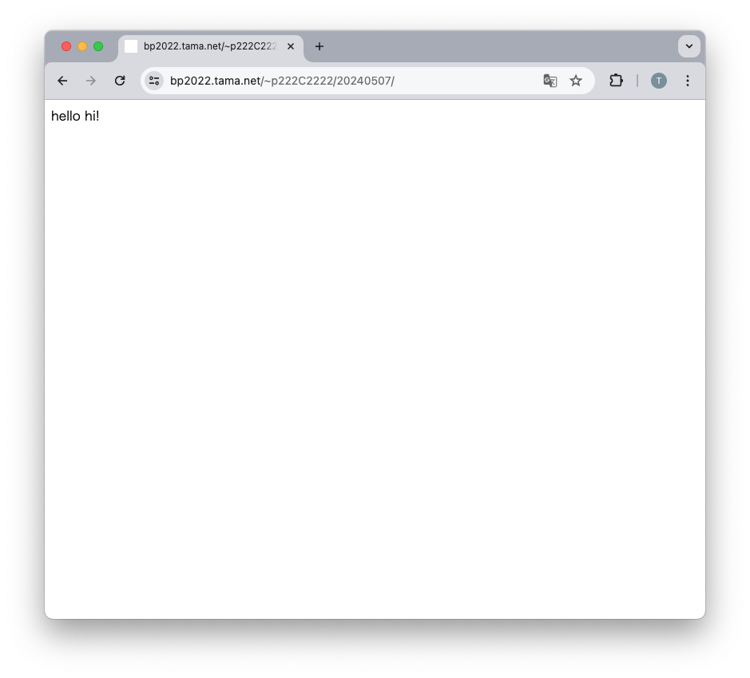
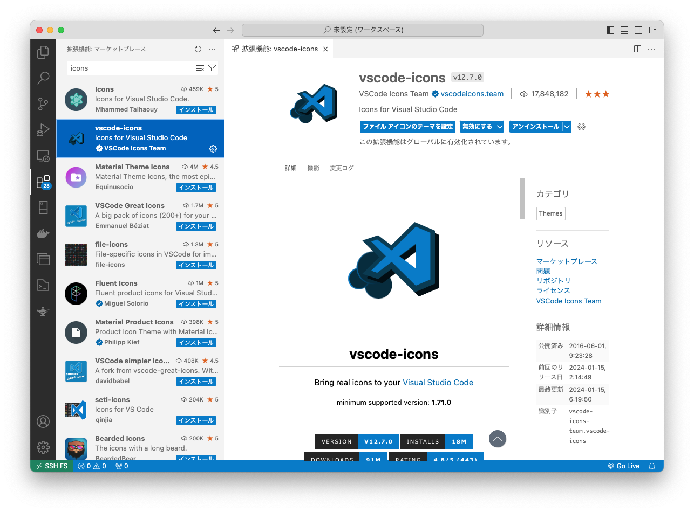

プログラミングの基礎、JavaScript と php
第3回 5月7日(火) 5限 (16:50〜18:30) J402
今日の内容
復習
プログラムはどうやって動くのか
JavaScriptの書き方
phpの書き方
よく使うコマンド
- pwd
-
現在のディレクトリディレクトリの区切り
- Windows
- ¥
- Mac
- /
ドライブの概念- Windows
- あり （C:）
- Mac
- なし （/Volumes/)
- ls
-
現在のディレクトリ内の一覧
- cd <dir>
-
ディレクトリを移動例)
- cd public_html
- public_htmlディレクトリへ移動
- cd ..
- 1つ上のディレクトリに移動する
- cd ../..
- 2つ上のディレクトリに移動する
- mkdir <dir>
-
ディレクトリを作成例)
- mkdir 20240507
- 20240507ディレクトリを作成
- rmdir <dir>
-
ディレクトリを削除
（ディレクトリの中身が空でないと削除できない）例)- rmdir 20240507
- 20240507ディレクトリを削除
- ni <file>
-
ファイルを作成(Windows)例)
- ni index.html
- 空のindex.htmlファイルを作成
- touch <file>
-
ファイルを作成(Mac/Linux)例)
- touch index.html
- 空のindex.htmlファイルを作成
- rm <file>
-
ファイルを削除例)
- rm index.html
- index.htmlファイルを削除
- rm -rf 20240507
- 20240507フォルダとその中身をすべて削除
- type <file>
-
ファイルの中身を表示(Windows)
- cat <file>
-
ファイルの中身を表示(Mac/Linux)
- echo <文字>
-
文字を出力例)
- echo hello
- helloと表示される
- man <コマンド>
-
マニュアルを見る例)
- man rm
- rmコマンドのマニュアルを表示
- cp <コピー元> <コピー先>
-
ファイルをコピー例)
- cp index.html index2.html
- index.htmlをコピーしてindex2.htmlを作成
- >
-
リダイレクト（出力をファイルに保存）例)
- echo hello > index.html
- index.htmlにhelloを書き込む
- >>
-
リダイレクト（出力をファイルに追記）例)
- echo hello >> index.html
- index.htmlにhelloを追記する
- chmod <アクセス権> <file>
-
アクセス権を設定(Mac/Linux)例)
- chmod 755 mkdir.sh
- mkdir.shに実行権を設定する
- which <コマンド>
-
コマンドのありか(PATH)を表示する(Mac/Linux)例)
- which bash
- bashのありか(PATH)を表示する
コマンドを使ってみよう
（サーバ上での操作）
- cd public_html
-
public_html フォルダの中に移動
- pwd
-
public_html フォルダの中に居ることを確認
- mkdir 20240507
-
public_html フォルダの中に20240507フォルダを作成
- cd 20240507
-
20240507 フォルダの中に移動
- echo hello > index.html
-
helloと書き込んだ index.htmlファイルを作成
- echo hi! >> index.html
-
index.html に hi! を追記
つくったファイルをブラウザで確認
https://bp2022.tama.net/~p222C2222/20240507/

プログラムを作ってみる
ssh fsでつないで
サーバ上にファイルを作成
mkdir.sh の中身
cd public_html
pwd
mkdir 20240507
cd 20240507
echo hello > index.html
echo hi! >> index.html
pwd
mkdir 20240507
cd 20240507
echo hello > index.html
echo hi! >> index.html
(おまけ) vscode-iconsをインストールすると見やすくなる

作ったプログラムを実行してみる
実行
bash mkdir.sh
 20240507ディレクトリがすでにあるのでエラーになる
20240507ディレクトリがすでにあるのでエラーになる
ディレクトリを削除して、再度実行
今度は実行できた
VS Codeでも、20240507フォルダが作成されて、その中に、index.htmlができているのがわかる
rm -rf public_html/20240507
bash mkdir.sh
bash mkdir.sh
mkdir.shの改造
mkdir.sh の中身 (黄色の部分を追記)
ここに実行するプログラムのPATHを指定することができる
ここに実行するプログラムのPATHを指定することができる
#!/bin/bash
cd public_html
pwd
mkdir 20240507
cd 20240507
echo hello > index.html
echo hi! >> index.html
cd public_html
pwd
mkdir 20240507
cd 20240507
echo hello > index.html
echo hi! >> index.html
プログラムに実行権限を付与
chmod 755 mkdir.sh
プログラムを実行してみる
（今度はファイル名の前に bash と書かなくてもよくなった）
（今度はファイル名の前に bash と書かなくてもよくなった）
./mkdir.sh
mkdir.sh の中身 (黄色の部分を変更)
20240507を$1に変更することで、実行時に好きなフォルダをつくれるようになる
20240507を$1に変更することで、実行時に好きなフォルダをつくれるようになる
#!/bin/bash
cd public_html
pwd
mkdir $1
cd $1
echo hello > index.html
echo hi! >> index.html
cd public_html
pwd
mkdir $1
cd $1
echo hello > index.html
echo hi! >> index.html
プログラムを実行してみる
（今度はファイル名の前に bash と書かなくてもよくなった）
20240507bフォルダが作成されて、そのなかに、index.htmlができている
（今度はファイル名の前に bash と書かなくてもよくなった）
./mkdir.sh 20240507b
Chat-GPTに聞いてみる
Chat-GPTに聞いてみた
bashで、今日の日付のフォルダを作って、その中に、hi! と書いた index.htmlというファイルを作成するためのscriptを教えてください
Chat-GPTが生成したプログラム
#!/bin/bash
# 今日の日付を取得
today=$(date +"%Y-%m-%d")
# フォルダを作成
mkdir "$today"
# index.htmlを作成
echo "<html><head><title>Hi!</title></head><body><h1>hi!</h1></body></html>" > "$today/index.html"
echo "フォルダ '$today' とファイル '$today/index.html' が作成されました。"
# 今日の日付を取得
today=$(date +"%Y-%m-%d")
# フォルダを作成
mkdir "$today"
# index.htmlを作成
echo "<html><head><title>Hi!</title></head><body><h1>hi!</h1></body></html>" > "$today/index.html"
echo "フォルダ '$today' とファイル '$today/index.html' が作成されました。"
プログラミング言語の種類
| コンパイラー方式 | インタープリター方式 |
|---|---|
| C | JavaScript |
| C++ | PHP |
| C# | Python |
| Java | Ruby |
| Swift | (bash) |
| Go | |
| Kotlin |
Chat-GPTに聞いてみる 2
Chat-GPTに聞いてみた
C言語で今日の日付のフォルダを作って、その中に、hi! と書いた index.htmlというファイルを作成するためのプログラムを教えてください
Chat-GPTが生成したCプログラム
#include <stdio.h>
#include <stdlib.h>
#include <time.h>
#include <sys/stat.h>
#include <sys/types.h>
int main() {
time_t t = time(NULL);
struct tm *tm = localtime(&t);
char folder_name[20];
sprintf(folder_name, "%d-%02d-%02d", tm->tm_year + 1900, tm->tm_mon + 1, tm->tm_mday);
// フォルダを作成
if (mkdir(folder_name, 0777) == -1) {
perror("mkdir error");
return EXIT_FAILURE;
}
// index.htmlファイルを作成
char file_path[50];
sprintf(file_path, "%s/index.html", folder_name);
FILE *file = fopen(file_path, "w");
if (file == NULL) {
perror("fopen error");
return EXIT_FAILURE;
}
fprintf(file, "<html><head><title>Hi!</title></head><body><h1>hi!</h1></body></html>");
fclose(file);
printf("フォルダ '%s' とファイル '%s' が作成されました。\n", folder_name, file_path);
return EXIT_SUCCESS;
}
#include <stdlib.h>
#include <time.h>
#include <sys/stat.h>
#include <sys/types.h>
int main() {
time_t t = time(NULL);
struct tm *tm = localtime(&t);
char folder_name[20];
sprintf(folder_name, "%d-%02d-%02d", tm->tm_year + 1900, tm->tm_mon + 1, tm->tm_mday);
// フォルダを作成
if (mkdir(folder_name, 0777) == -1) {
perror("mkdir error");
return EXIT_FAILURE;
}
// index.htmlファイルを作成
char file_path[50];
sprintf(file_path, "%s/index.html", folder_name);
FILE *file = fopen(file_path, "w");
if (file == NULL) {
perror("fopen error");
return EXIT_FAILURE;
}
fprintf(file, "<html><head><title>Hi!</title></head><body><h1>hi!</h1></body></html>");
fclose(file);
printf("フォルダ '%s' とファイル '%s' が作成されました。\n", folder_name, file_path);
return EXIT_SUCCESS;
}
VS Codeで、mkdir.c という名前で作成

Cはコンパイラー方式なので、ccコマンドでコンパイルする
cc mkdir.c
a.outという実行可能ファイルができたので実行してみる
./a.out
JavaScript の書き方
JavaScript はブラウザ上で動くので、htmlの中に書く
<script>
ここにプログラムを書く
</script>
ここにプログラムを書く
</script>
index.htmlの中に書いてみる
ブラウザで確認してみる
TEST!
<script>
alert("TEST");
</script>
<script>
alert("TEST");
</script>
https://bp2022.tama.net/~p222C2222/20240507/ TESTという文字のアラートボックスが表示されるようになった
JavaScriptの基本
- 1行1命令
- 命令 ＝ 文
- セミコロン( ; ) で区切る
index.htmlの中を編集してみる
TEST2!
<script>
alert("TEST");
alert("TEST2");
</script>
<script>
alert("TEST");
alert("TEST2");
</script>
JavaScriptのコメント文
- //1行のコメント
-
/* 複数行の
コメント */
index.htmlの中を編集してみる
TEST2!
<script>
//alert("TEST");
alert("TEST2");
</script>
<script>
//alert("TEST");
alert("TEST2");
</script>
JavaScriptはブラウザで実行されるので、プログラムが見えてしまう
php の書き方
php はサーバ上で動く
<?php
ここにプログラムを書く
?>
ここにプログラムを書く
?>
index.phpの中に書いてみる
ブラウザで確認してみる
TEST!
<?php echo date("Y-m-d H:i:s"); ?>
<?php echo date("Y-m-d H:i:s"); ?>
https://bp2022.tama.net/~p222C2222/20240507/index.php 今の時間が表示されるようになった
phpの基本
- 1行1命令
- 命令 ＝ 文
- セミコロン( ; ) で区切る
index.htmlの中を編集してみる
TEST2!
<?php
echo date("Y-m-d H:i:s");
echo rand();
?>
<?php
echo date("Y-m-d H:i:s");
echo rand();
?>
phpのコメント文
- //1行のコメント
-
/* 複数行の
コメント */
index.htmlの中を編集してみる
TEST2!
<?php
//echo date("Y-m-d H:i:s");
echo rand();
?>
<?php
//echo date("Y-m-d H:i:s");
echo rand();
?>